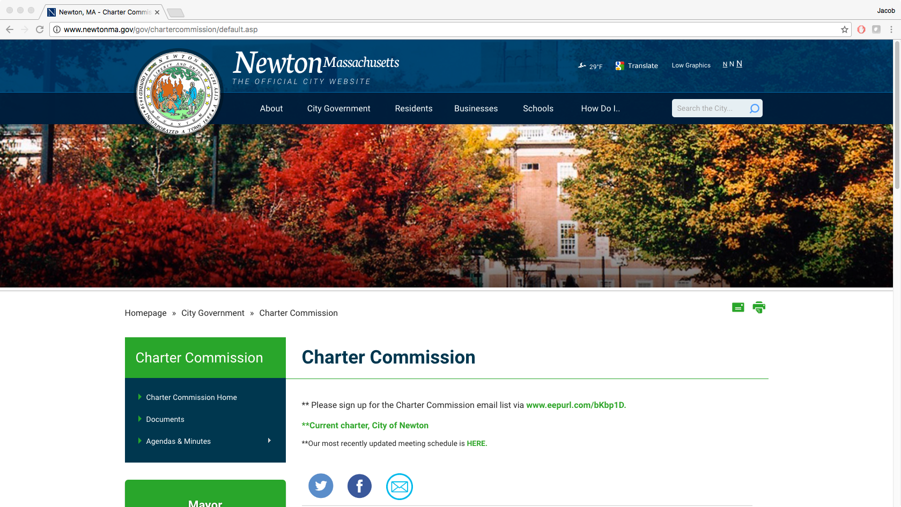

About
Last November, Newton voters approved the formation of a Charter Commission to review Newton’s charter (the “constitution” of our local government) and recommend changes. Such a review makes sense, because Newton has not revised its charter in forty years. Voters also elected 8 people to serve on the Charter Commission, and these commission members later declared their goal to be “greater public participation in government and effectiveness, responsiveness, and efficiency of our government.” On Tuesday, November 7, 2017, Newton voters will decide whether to accept or reject these proposed changes to the Newton city charter put forward by the charter commission.
Scope of Proposed Changes
Last July, the Commissioners examined the topic of term limits. At that juncture, the straw vote reflected support for maintaining an 8 year term limit for School Committee, and adding a 16 year limit for City Councilors and 12 year limit for the Mayor.
Last November, the Commission voted unanimously (straw vote) to recommend a 13 member City Council, with 1 member residing in each of the 8 wards to be elected at-large and 4 additional Councilors elected at large without a residency requirement. This reflects limits on consecutive terms, and those interested in extending service could campaign for re-election after a break in service.
The Commission will hold one more public hearing prior to the submission of the final report.
Additional Resources

If you're looking for additional information, please check out the "Why Vote NO?" section on this site. We also highly reccomend you check out the Charter Comission page on newtonma.gov. This site will be regularly updated with new dates for public hearings and other meetings.